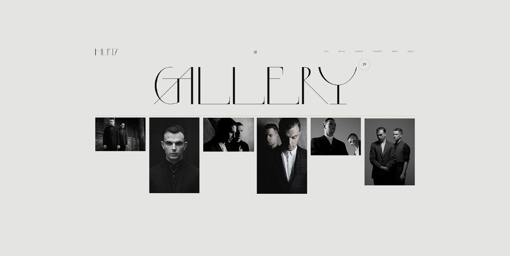
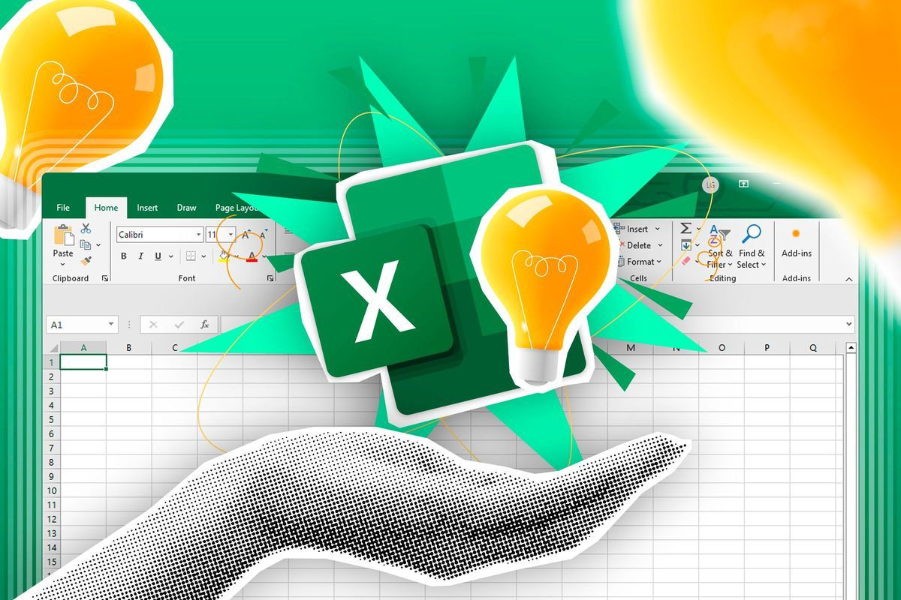
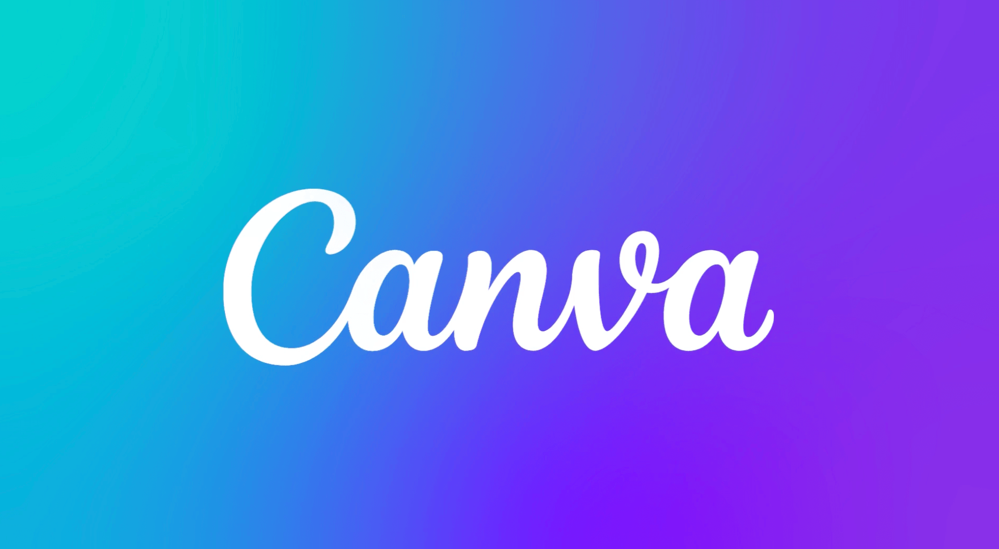
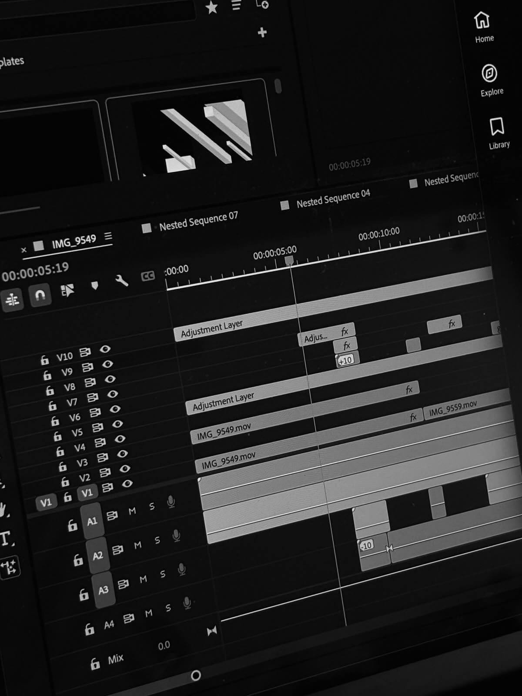

Projects
Web builds, design work, and digital experiments from ITE170 and beyond.

HTML / CSS CompletedPhotography Grid
A responsive web gallery designed to showcase visual content using CSS Grid and Flexbox. This project focuses on high-quality image presentation and mobile-first responsiveness.
View Live Site →
Excel CompletedSales Analysis & Automation
Advanced Excel sales system for Pepi PEVs. Created dynamic PivotTables and interactive charts to automate data processing and trend analysis for the Sales Department.
View Live Site →Interactive Digital Valentine
A personalized interactive card featuring over 300 lines of custom code. Built with JavaScript to handle complex interaction logic and CSS3 for smooth animations.
View Live Project →
Multimedia CompletedGraphic Design & Branding
A visual branding project created using Canva. Includes layout design, color theory application, and typography selection for digital marketing assets.
View Live Site →Financial Accounting Analysis
A comprehensive presentation on accounting principles and financial reporting. The project demonstrates data accuracy and the role of modern tools in financial management.
View Prototype →
Video Editing CompletedMultimedia Storytelling
A rhythmic social media edit created with CapCut, focusing on visual transitions and the concept of "Intention." This project showcases creative video assembly and timing skills.
View Live Site →
Interactive Digital Valentine
An interactive, humorous web experience designed to guarantee a "Yes" for a Valentine's date. I built a custom "runaway" button logic using JavaScript: whenever the user tries to hover over the "No" button, it dynamically teleports away, making it impossible to click. Once the user finally selects "Yes," the app triggers a celebratory fireworks animation and a victory message.
- Developed complex event listeners and dynamic positioning logic in JavaScript
- Implemented interactive CSS animations for the "Fireworks" celebration effect
- Focused on playful UX (User Experience) design to engage and surprise the user
Want to see my multimedia work?
Video, animation, and interactive media projects from the semester.